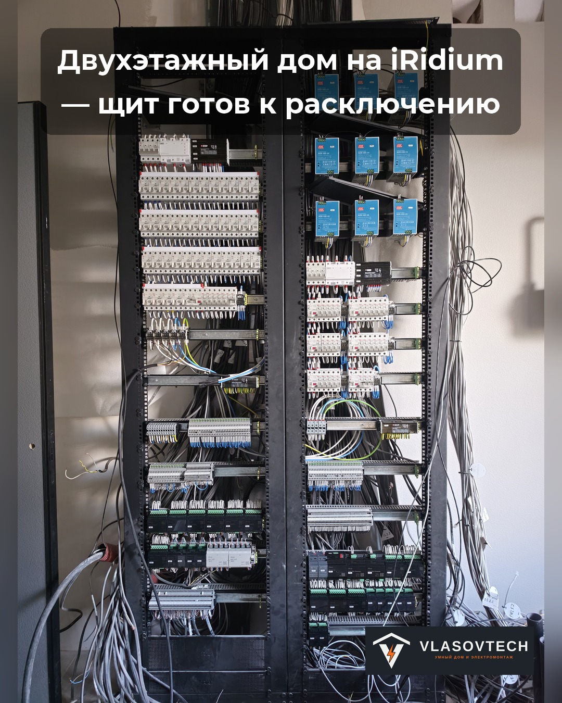

Дом · iRidi
Щит перед подключением
- Задача
- Распределение и управление для двухэтажного дома.
- Решение
- Щит с защитой, клеммами и модулями автоматики.
- Что видно на этапе
- Показан этап сборки перед расключением. Финальная сдача этим фото не подтверждается.